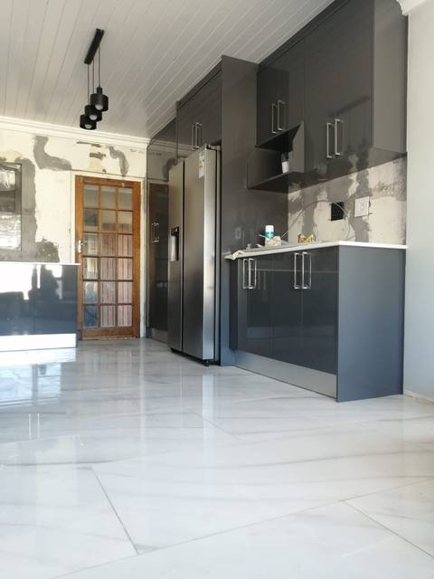
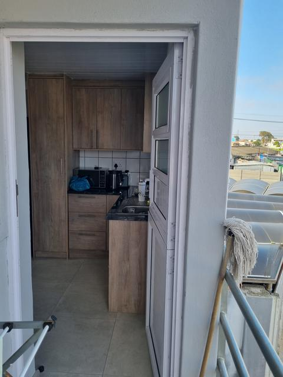

Renovation & woodworks in Maitland
Maitland mixes older family houses, small semi-detached homes and light-industrial units. We do as much shopfitting and office work here as home renovation. We're often asked for kitchen refits for older family homes, security doors and gates, and shopfitting and workshop or office fit-outs.
Examples of our work
From our projects across Cape Town.




Working in Maitland
Maitland grew up along Voortrekker Road and the railway line, so many homes are older semis and freestanding houses from the early 1900s onwards, built close to the street. Original timber floors and doors often survive under later layers of paint and carpet. Behind the main road there is light industry and plenty of small businesses, which is why we fit counters, shelving and office partitions here as often as kitchens. Our workshop is in the 7th Avenue Business Park, so for Maitland jobs we can measure, build and fit with very little travel.
Kitchens · Built-in cupboards · Doors & garage doors · Furniture · Decks · Renovations →
Questions from Maitland
Can we visit your workshop in Maitland?
Yes. We're at Unit 4, 7th Avenue Business Park, Maitland. WhatsApp us first so we're there when you arrive, and we can show you materials and finishes.
Can you fit out a small shop or office in Maitland?
Yes. Counters, shelving, storage and partitions are built in our Maitland workshop and fitted after hours if that suits your business better.
Can old timber floors in a Maitland house be saved?
Often, yes. We lift a few boards to check the joists and subfloor, replace what is rotten and match new boards to the old ones before sanding.
Can you make changes to a design after seeing samples?
Yes. Because the workshop is local, we can adjust colours, handles or layouts after you have seen the materials, before production starts.